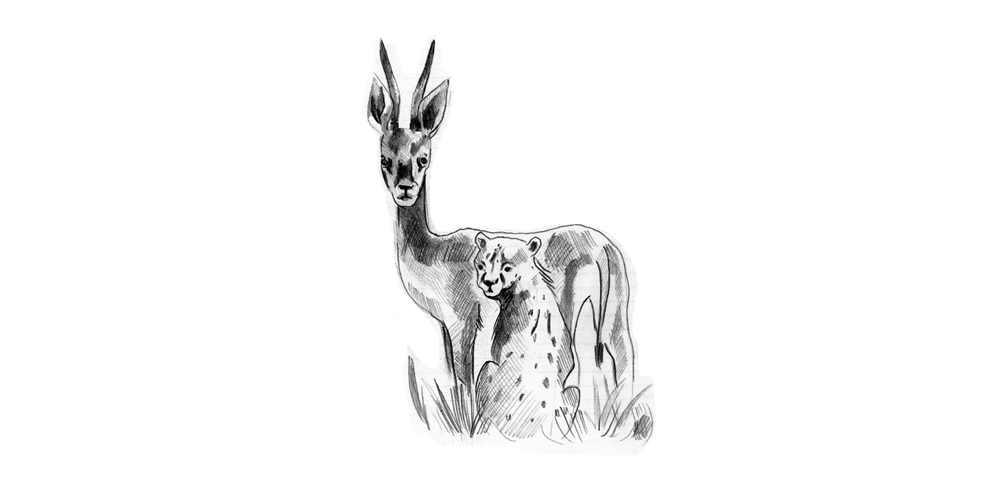
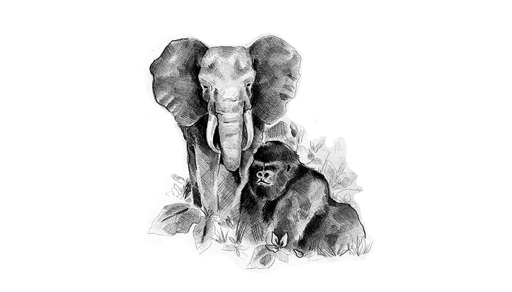

Por el Planeta es una serie de esfuerzos que buscan capturar el esplendor de la naturaleza y poner atención en los efectos que tenemos sobre ella.
Aportamos herramientas para que nuestro público comprenda la importancia del cuidado del medio ambiente y el respeto a todas especies.
Este es el espacio para contemplar el planeta en que vivimos en todo su esplendor, para descubrir por qué es necesario trabajar juntos Por el Planeta.
DOCUMENTALES POR EL PLANETA
Desde la selva tropical hasta las profundidades del océano, Por el Planeta produce un serie de reportajes documentales que abordan diversos aspectos de las maravillas y urgencias ecológicas del planeta. Mira completos los episodios publicados hasta el momento.

Namibia, desierto infinito
Por el Planeta visita el desierto más antiguo del mundo en Namibia para recorrer estas tierras infinitas y descubrir la vida que aún subsiste.
Tiburones, encuentros cercanos
Encontrar a la criaturas del mar no es un reto, simplemente debemos mirar a los ojos de estos. Un encuentro cercano con un tiburón es un sueño que te permite abrazar la naturaleza de la bestia; pues a pesar de todo nos parecemos.

El último edén de África
Si alguna vez existió el paraíso terrenal, debió estar en la cuenca del Congo. Aquí los gorilas retan la mirada. Aquí existe una de las selvas más enigmáticas del continente negro llamada El Último Edén de África.
Las Venas de la Tierra
En Quintana Roo y en la península de Yucatán, ubicados en México, se esconden grandes misterios inimaginables.
La Huella del Jaguar
Los mallas le llamaron balam. El jaguar era el dios Sol. Durante su viaje el día se hacía viejo y se convertía en noche. Hoy, el señor de la selva ha perdido más de la mitad del territorio que dominaba. Es cazado por ganaderos y desollado por coleccionistas. Este es el recorrido de un año emprendido por el equipo del Por el Planeta en busca de la huella del jaguar.
La Expedición
¿Qué es el mar, por qué seduce, por qué tienta? Las preguntas de Benedetti son también las de los investigadores marinos del archipiélago de Revillagigedo. Por primera vez, Noticieros Televisa se embarca en una expedición marina.
Amazonas, la selva encantada
Adéntrate en el mágico ecosistema de la selva amazónica donde encontraras de la más pequeña a la más enigmática especie.
El Eco de las Sirenas
'Crystal River', parque en el que el manatí tiene contacto directo con el humano, envuelve una gran controversia.
Patagonia salvaje
Una región árida y seca en el sur donde la vida nace en una ola y también se va. El equipo de 'Por el Planeta' se dirige a un accidente costero argentino donde habitan las especies más emocionantes; un lugar extremo, pero sobre todo salvaje.
El Señor de Guadalupe
El equipo de 'Por el Planeta' graba las características del tiburón blanco que quieren marcar, junto al Doctor Mauricio Hoyos.
Los unicornios del mar
El equipo de Por el Planeta explora el círculo polar ártico, donde no existe la noche durante seis meses, con el fin de encontrar a un animal casi mítico: El Unicornio del Mar.
17 días en el fin del mundo: la Antártida
En el continente Antártico, el termómetro puede alcanza menos de 80 grados bajo cero. Aunque cubierto de agua congelada, es también el lugar más seco del planeta. Una masa de 14 millones de kilómetros cuadrados que se eleva imponente sobre el nivel del mar.
Palau, el último paraíso
Palau, habitat de sorprendentes formas de vida; donde las plantas son animales y los animales flores.
Galería documental
POR EL PLANETA: CONCURSO DE FOTOGRAFÍA
Más que un concurso de fotografía, Por el Planeta es un movimiento que busca transformar nuestra relación con la tierra y las otras especies que viven en ella. Creemos que la fotografía es algo más que luz, imágenes bellas o proporciones perfectas. También es un vehículo de verdadero cambio.